Miranda Mudge, Karl Veggerby, Emma Timmins-Schiffman
Published
April 20, 2023
Data
We chose to use the plankton groups that had the most complete datasets over the course of the time series. This included the zooplankton Cyclops, Diaptomus, and Non-colonial rotifers. The phytoplankton groups were unicells and other algae. Of course, this approach excluded many other groups which might have been resulted in better model fits, or more suitable data for our hypothesis. We chose temperature and TP as our covariates since they both have a strong influence on phytoplankton and temperature has an influence on zooplankton. We created a seasonality dummy variable.
Methods
Load the data
Code
## load MARSS for data and analyseslibrary(MARSS)library(ggplot2)## load the raw data (there are 3 datasets contained here)data(lakeWAplankton, package ="MARSS")## we want `lakeWAplanktonTrans`, which has been transformed## so the 0's are replaced with NA's and the data z-scoredall_dat <- lakeWAplanktonTrans
Wrangle the data
We chose taxa that had mostly complete data for the entire time series. We wanted to investigate possible links between fluctuations in phytoplankton and impacts on zooplankton grazers, so we only included zooplankton that graze on phytoplankton. Later, we investigated if the models fit the data better for a shorter time series with a stronger apparent seasonal signal (1962-1972).
Code
## assign colors for plottingclr <-c("red", "orange", "green", "blue", "purple")#subset data to taxa of interest and pH, temp, and TPplank.for.DFA<-subset(all_dat, select=c("Year", 'Unicells', 'Other.algae', 'Cyclops', 'Diaptomus', 'Non.colonial.rotifers'))#transpose dataplank.t<-t(plank.for.DFA)year.cols<-plank.t[1,]plank.t<-plank.t[2:6,]colnames(plank.t)<-year.colsN.ts<-nrow(plank.t)TT<-ncol(plank.t)yr_frst <-1962
Fitting a Model
We have 5 time series and will start with assuming 3 hidden trends. We assume that there are different observation errors for the different plankton given differences in size and feeding behavior. The Z matrix can be seen in the code below.
Code
#set matrices for the DFA modelZ.vals<-list("z11", 0, 0,"z21", "z22", 0,"z31", "z32", "z33","z41", "z42", "z43","z51", "z52", "z53")Z<-matrix(Z.vals, nrow=N.ts, ncol=3, byrow=T)Z
We will start with the assumption that our best model with have 4 hidden trends. We hypothesize that zooplankton will respond to fluctuations in the population of phytoplankton and that both plankton groups will respond strongly to temperature - a main driver of biological response in the ocean - and phytoplankton will respond strongly to changes in total phosphorus since increased TP typically causes phytoplankton growth.
Code
#set up covariates and compare models with different combinations of covariatestemp <-t(all_dat[,"Temp", drop =FALSE])TP <-t(all_dat[,"TP", drop =FALSE])mod_list =list(m =4, R ="diagonal and unequal")dfa_temp <-MARSS(plank.t, model = mod_list, form ="dfa", z.score =FALSE,control=cntl.list, covariates = temp, silent =TRUE,method ="BFGS")
Code
dfa_TP <-MARSS(plank.t, model = mod_list, form ="dfa", z.score =FALSE,control=cntl.list, covariates = TP, silent =TRUE,method ="BFGS")
Code
dfa_both <-MARSS(plank.t, model = mod_list, form ="dfa", z.score =FALSE,control=cntl.list, covariates =rbind(temp, TP), silent =TRUE,method ="BFGS")
model AICc
[1,] "no covars" "4698"
[2,] "Temp" "4459"
[3,] "TP" "4572"
[4,] "Temp & TP" "4438"
The “best” model (lowest AICc) includes both temperature and TP, supporting our hypothesis that both of these covariates drive biological response.
Adding seasonality to the model
Seasonal influences likely affect the plankton community as well. We create a dummy model for the seasonal influence to test its impact on model fit. We are not including all iterations here, but we tested seasons alone, seasons + TP, seasons + temperature, and seasons + temp + TP. The models that included seasons + TP and seasons + TP + temperature had the lowest and similar AICc (less than 10 units apart).
Code
cos_t <-cos(2* pi *seq(TT) /12)sin_t <-sin(2* pi *seq(TT) /12)dd <-rbind(cos_t, sin_t)## fit modeldfa_TPseas <-MARSS(plank.t, model = mod_list, form ="dfa", z.score =FALSE,control=cntl.list, covariates =rbind(TP, dd), silent =TRUE,method ="BFGS")
Code
dfa_TPtempseas <-MARSS(plank.t, model = mod_list, form ="dfa", z.score =FALSE,control=cntl.list, covariates =rbind(temp,TP, dd), silent =TRUE,method ="BFGS")
Results
Plot of the model fits for each of the seasonal models:
Code
# get estimated ZZZ_est <-coef(dfa_TPseas, type ="matrix")$ZH_inv <-varimax(Z_est)$rotmat# rotate factor loadingsZ.rot = Z_est %*% H_invtrends.rot =solve(H_inv) %*% dfa_TPseas$statesw_ts <-seq(dim(plank.t)[2])ylbl <-rownames(plank.t)#This function will return the fits and CIs if no missing valuesgetDFAfits <-function(MLEobj, alpha =0.05, dd =NULL) { #dd = covariates fits <-list() Ey <-MARSShatyt(MLEobj) # for var() calcs ZZ <-coef(MLEobj, type ="matrix")$Z # estimated Z nn <-dim(Ey$ytT) # number of obs ts# mm <- ncol(ZZ) # number of factors/states TT <-ncol(Ey$ytT) # number of time steps## check for covarsif (!is.null(dd)) { DD <-coef(MLEobj, type ="matrix")$D cov_eff <- DD %*% dd } else { cov_eff <-matrix(0, nn, TT) }## model expectation fits$ex <- ZZ %*% H_inv %*% MLEobj$states + cov_eff## Var in model fits VtT <-MARSSkfss(MLEobj)$VtT VV <-NULLfor (tt in1:TT) { RZVZ <-coef(MLEobj, type ="matrix")$R - ZZ %*% VtT[, , tt] %*%t(ZZ) SS <- Ey$yxtT[, , tt] - Ey$ytT[, tt, drop =FALSE] %*%t(MLEobj$states[, tt, drop =FALSE]) VV <-cbind(VV, diag(RZVZ + SS %*%t(ZZ) + ZZ %*%t(SS))) } SE <-sqrt(VV)## upper & lower (1-alpha)% CI fits$up <-qnorm(1- alpha /2) * SE + fits$ex fits$lo <-qnorm(alpha /2) * SE + fits$exreturn(fits)}mod_fit <-getDFAfits(dfa_TPseas)
Warning in sqrt(VV): NaNs produced
Code
par(mfrow =c(N.ts, 1), mai =c(0.5, 0.7, 0.1, 0.1), omi =c(0, 0, 0, 0))for(i in1:N.ts) { up <- mod_fit$up[i,] mn <- mod_fit$ex[i,] lo <- mod_fit$lo[i,]plot(w_ts, mn, type ="n",xlab ="", ylab = ylbl[i],xaxt ="n", cex.lab =1.2,ylim =c(min(lo, na.rm=TRUE), max(up, na.rm=TRUE)))axis(1, 12* (0:dim(plank.t)[2]) +1, yr_frst +0:dim(plank.t)[2])points(w_ts, plank.t[i,], pch =16, col = clr[i])lines(w_ts, up, col ="darkgray")lines(w_ts, mn, col ="black", lwd =2)lines(w_ts, lo, col ="darkgray")}
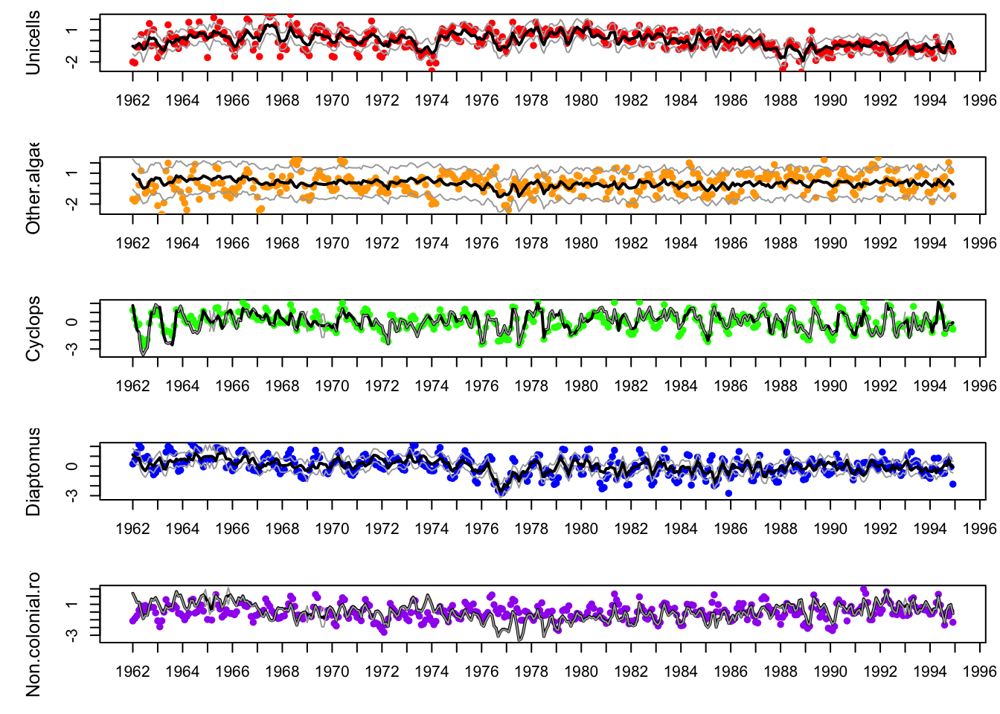
Code
#Table of AICc for all fitted modelsprint(cbind(model =c("no covars", "Temp", "TP", "Temp & TP", "TP Seas", "TP & temp & Seas"),AICc =round(c(dfa.fit3$AICc, dfa_temp$AICc, dfa_TP$AICc, dfa_both$AICc, dfa_TPseas$AICc, dfa_TPtempseas$AICc))),quote =FALSE)
model AICc
[1,] no covars 4698
[2,] Temp 4459
[3,] TP 4572
[4,] Temp & TP 4438
[5,] TP Seas 4337
[6,] TP & temp & Seas 4341
Both fits look similar, suggesting that temperature has little affect on the model when seasonality and TP are included. Since temperature and season are highly correlated (temperature changes with seasons), it makes sense that the most parimonious model only needs one of these two covariates.
MARSSresiduals.tt1 reported warnings. See msg element of returned residuals object.
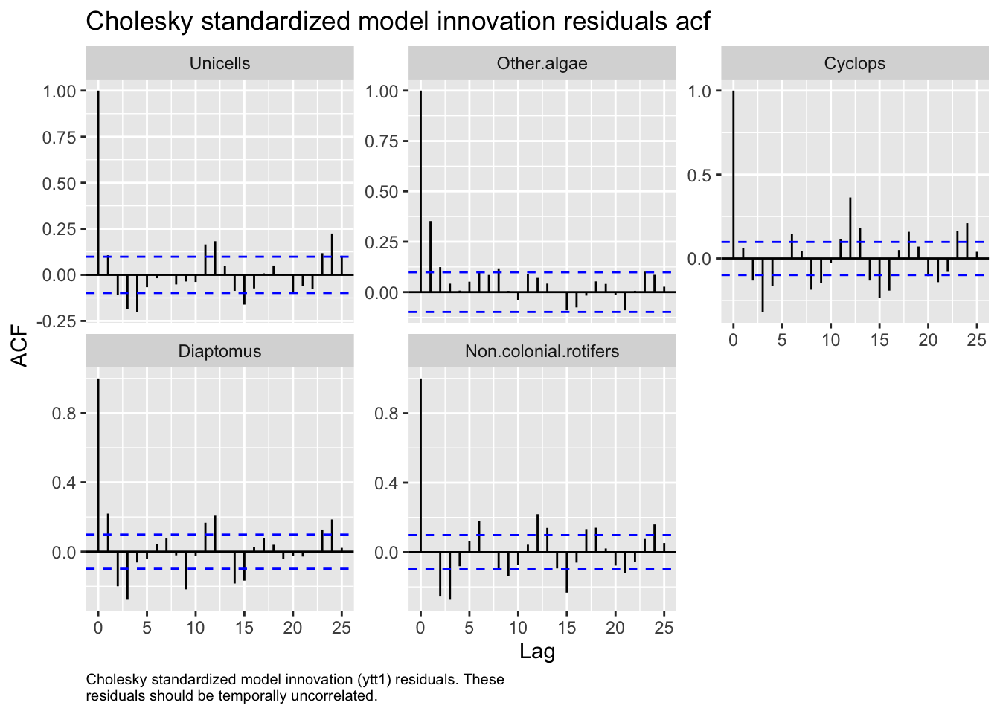
The ACFs of the residuals don’t look amazing.
Let’s look at the overall fit of the model:
Code
mm <-4## plot the processesfor(i in1:mm) { ylm <-c(-1, 1) *max(abs(trends.rot[i,]))## set up plot areaplot(w_ts,trends.rot[i,], type ="n", bty ="L",ylim = ylm, xlab ="", ylab ="", xaxt ="n")## draw zero-lineabline(h =0, col ="gray")## plot trend linelines(w_ts, trends.rot[i,], lwd =2)lines(w_ts, trends.rot[i,], lwd =2)## add panel labelsmtext(paste("State",i), side =3, line =0.5)axis(1, 12* (0:dim(plank.t)[2]) +1, yr_frst +0:dim(plank.t)[2])}
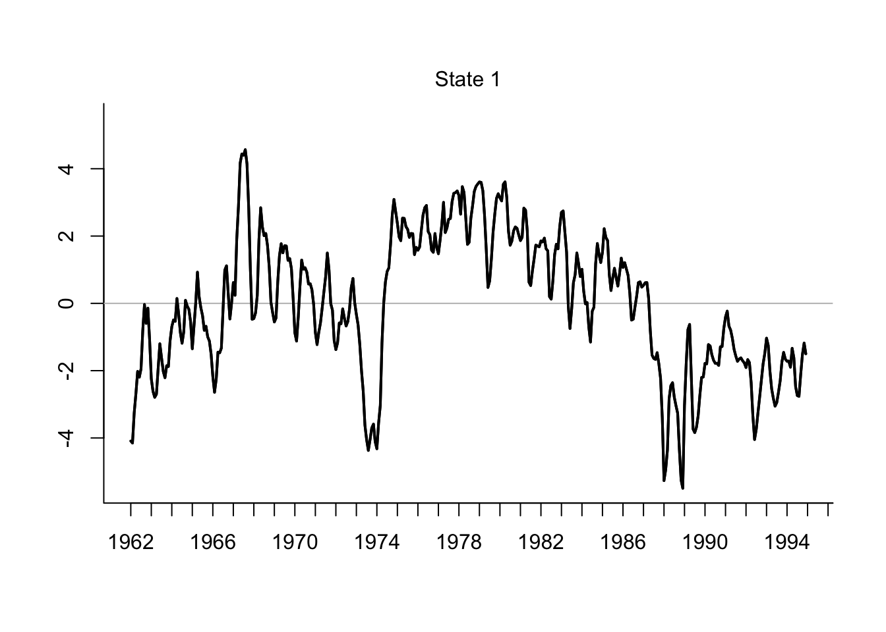
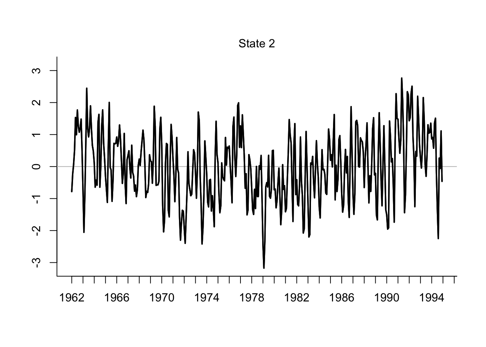
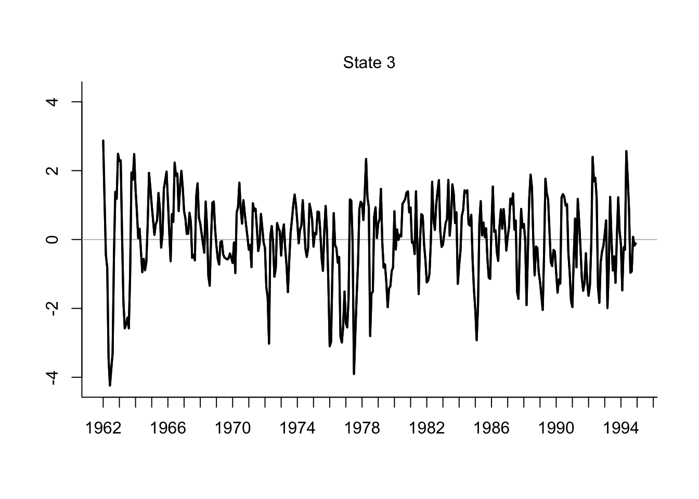
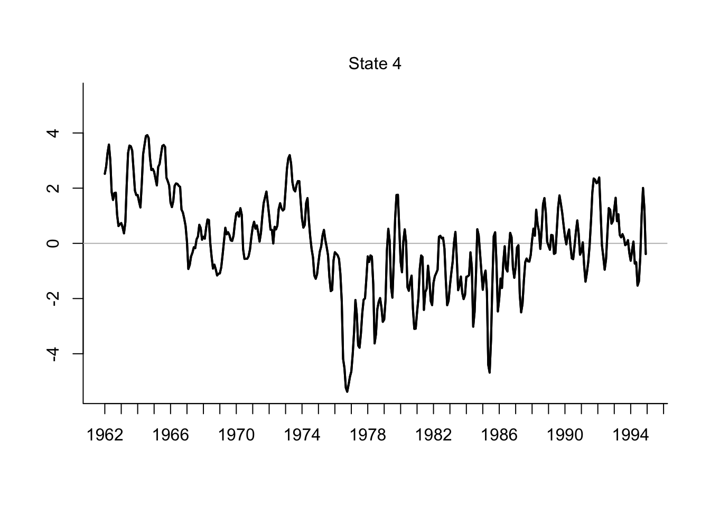
State 1 has two big dips: ~1974 and ~1988. The first may be related to the decrease in TP in the lake. State 2 shows some seasonal pattern ~6 years and a steady increase starting in 1978. State 3 is relatively steady over time with possible seasonality. State 4 decreases until about 1977 and then rebounds and remains stable, with possible seasonal patterns.
All taxa are positively associated with state 1. Unicells, algae and rotifers have a positive association with state 2. Cyclops has a strong positive loading on state 3, with weaker loadings from unicells, algae, and rotifers. Diaptomus has the strongest positive loading on state 4, with weak loadings from unicells, algae, and cyclops. The phytoplankton have loadings on all states, suggesting that we did not quite capture their trends effectively with our model. The strongest associations were for the copepods Diaptomus and Cyclops, suggesting that our model does a decent job of capturing their population dynamics.
Code
# plot the fitspar(mfcol =c(5, 1), mar =c(3, 4, 1.5, 0.5), oma =c(0.4, 1, 1, 1))for (i in1:N.ts) { up <- mod_fit$up[i, ] mn <- mod_fit$ex[i, ] lo <- mod_fit$lo[i, ]plot(w_ts, mn,xlab ="", ylab = ylbl[i], xaxt ="n", type ="n", cex.lab =1.2,ylim =c(min(lo, na.rm=TRUE), max(up, na.rm=TRUE)) )axis(1, 12* (0:dim(plank.t)[2]) +1, 1980+0:dim(plank.t)[2])points(w_ts, plank.t[i, ], pch =16, col = clr[i])lines(w_ts, up, col ="darkgray")lines(w_ts, mn, col ="black", lwd =2)lines(w_ts, lo, col ="darkgray")}
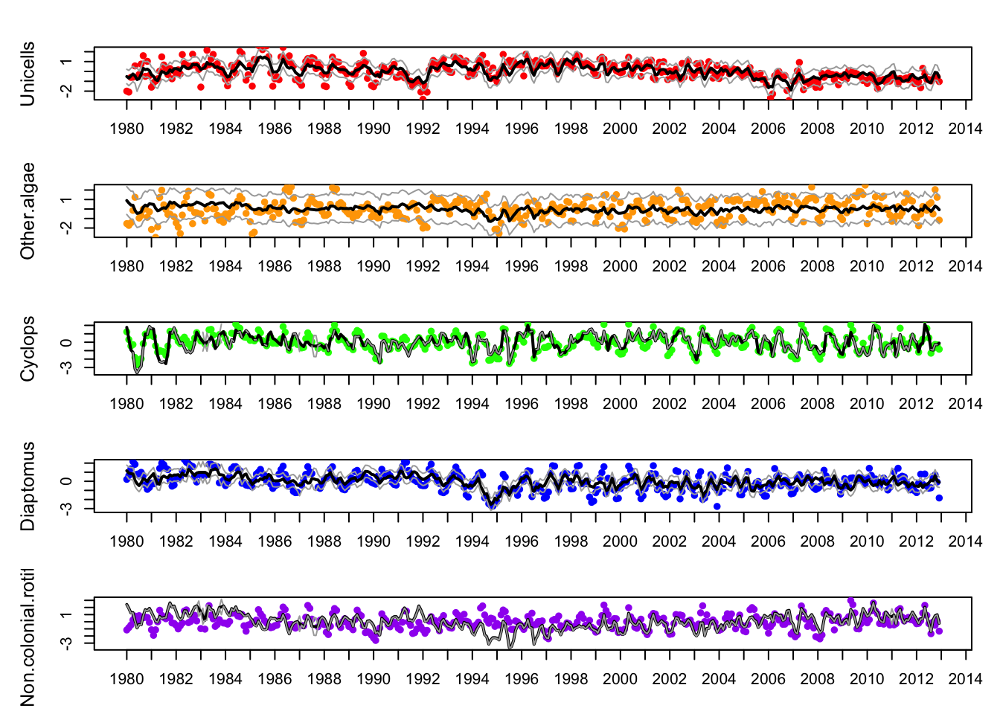
What happens if we try to fit a similar model after the period of high TP in Lake Washington?
Code
#prepare the new datasetall_dat2 <- lakeWAplanktonRawplot.ts(all_dat2[,4])
plank.10yr<-subset(all_dat2, select=c("Year", 'Unicells', 'Other.algae', 'Cyclops', 'Diaptomus', 'Non.colonial.rotifers'), all_dat[,1]<1991)plank.10yr<-subset(all_dat2, select=c("Year", 'Unicells', 'Other.algae', 'Cyclops', 'Diaptomus', 'Non.colonial.rotifers'), all_dat[,1]>1979)#transpose dataplank.t10<-t(plank.10yr)year.cols<-plank.t10[1,]plank.t10<-plank.t10[2:6,]colnames(plank.t10)<-year.colsN.ts<-nrow(plank.t10)TT<-ncol(plank.t10)# re-do z-scoredat.z<-zscore(plank.t10)temp.10yr <-t(all_dat2[1:180,"Temp", drop =FALSE])TP.10yr <-t(all_dat2[1:180,"TP", drop = T])temp.z<-zscore(temp.10yr)TP.z<-zscore(TP.10yr)#replace NA with 0 in TP.zTP.z[is.na(TP.z)] <-0cos_t <-cos(2* pi *seq(TT) /12)sin_t <-sin(2* pi *seq(TT) /12)dd.10<-rbind(cos_t, sin_t)
When we looked at 4 hidden trends for our data subset, the 4th trend was just a straight horizontal line, so we moved forward with 3 hidden trends. TP + seasons had a lower AICc than temperature alone.
Code
mod_list =list(m =3, R ="diagonal and unequal")dfa_TPseas.10<-MARSS(plank.t10, model = mod_list, form ="dfa", z.score =TRUE,control=cntl.list, covariates =rbind(TP.z,dd.10), silent =TRUE,method ="BFGS")#mod_fit.TPseas.10 <- getDFAfits(dfa_TPseas.10)autoplot(dfa_TPseas.10, plot.type='acf.std.model.resids.ytt1')
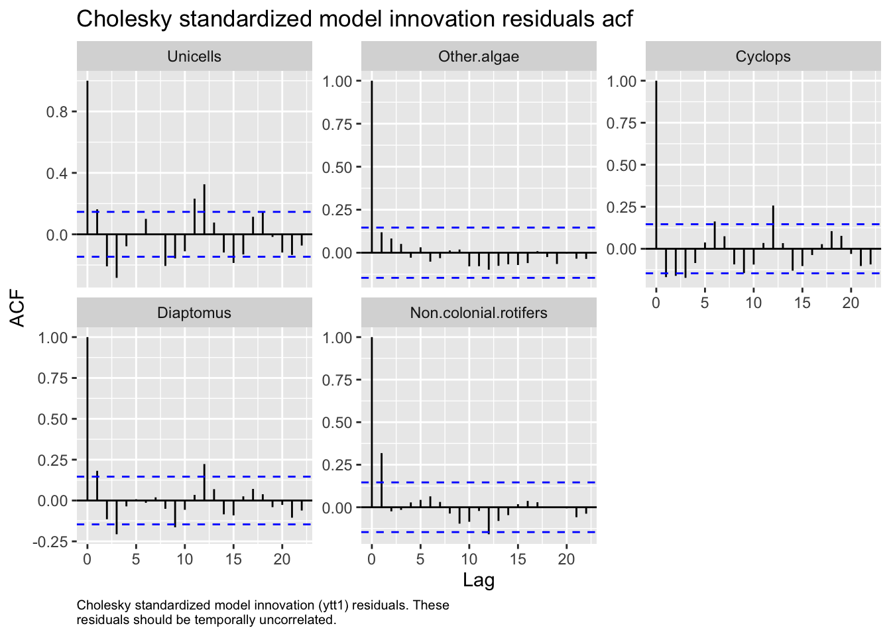
Code
w_ts_10 <-seq(dim(plank.t10)[2])
The data do not look well represented by this model.
mm<-3for(i in1:mm) { ylm <-c(-1, 1) *max(abs(trends.rot.10[i,]), na.rm=TRUE)## set up plot areaplot(w_ts_10,trends.rot.10[i,], type ="n", bty ="L",ylim = ylm, xlab ="", ylab ="", xaxt ="n")## draw zero-lineabline(h =0, col ="gray")## plot trend linelines(w_ts_10, trends.rot.10[i,], lwd =2)lines(w_ts_10, trends.rot.10[i,], lwd =2)## add panel labelsmtext(paste("State",i), side =3, line =0.5)axis(1, 12* (0:dim(plank.t10)[2]) +1, yr_frst +0:dim(plank.t10)[2])}
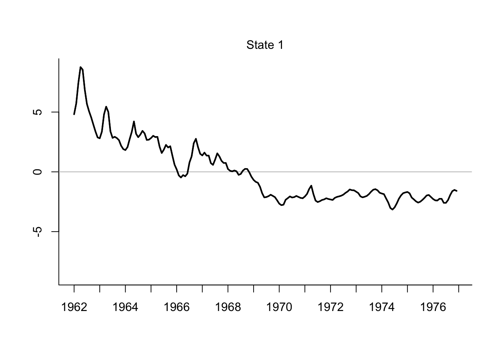
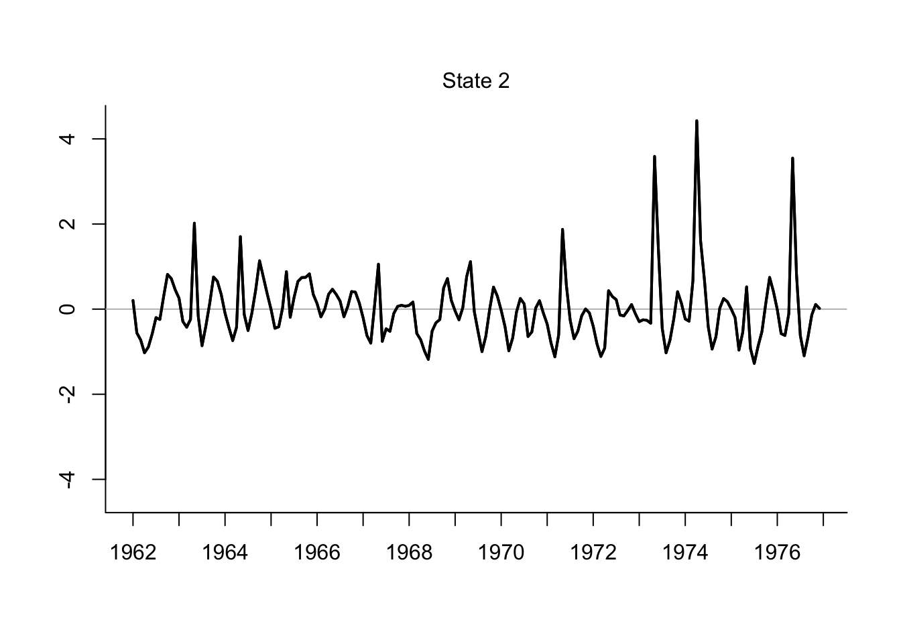
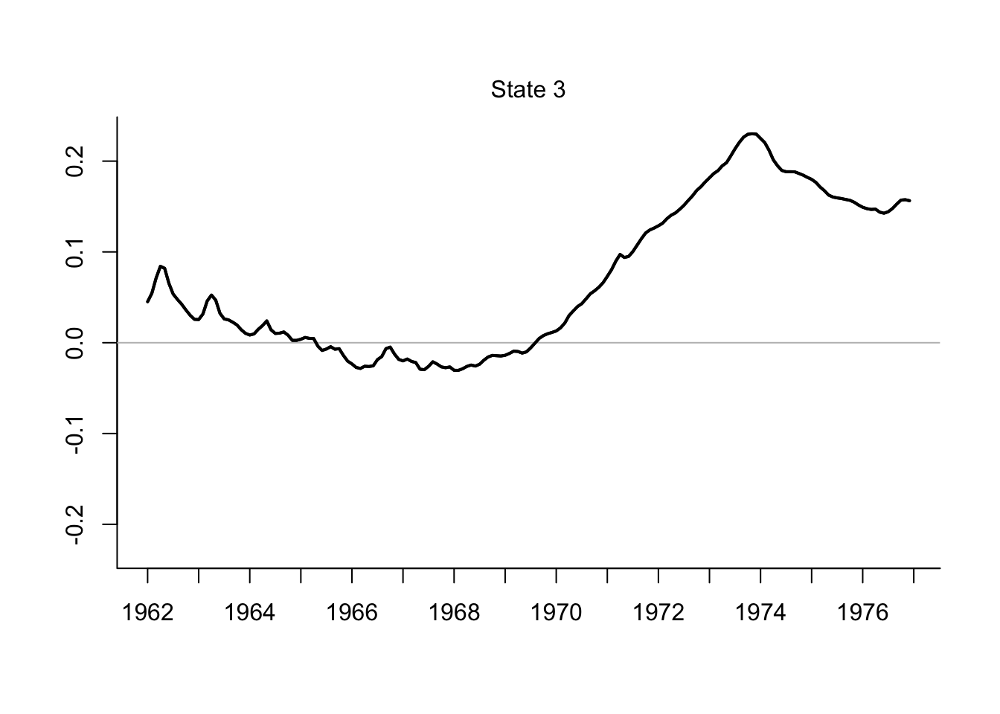
Discussion
We chose to first analyze data from the full time series with the assumption that more data would yield stronger associations between covariates and plankton abundance. We first determined the optimal number of states by fitting multiple models, each with different numbers of states. The models were then compared via AICc to determine what number of states best fit the time series.
The best fitting model had 4 hidden states over the full period of time; there were no other competing models based on delta AICc. Since we have just 5 ts and 4 hidden trends (our m is close to our n) we should probably reconsider the data we are monitoring!
We then chose covariates (TP and temperature) and compared models with different combinations of temperature, total phosphorus, a combination of temperature and total phosphorus, dummy sine and cosine waves to simulate seasonality, and total phosphorus combined with seasonality. We did not fit a model with temperature and seasonality, as it was assumed that these two variables would be highly correlated, and thus shouldn’t be modeled together as their effects would not be distinguishable.
A model with total phosphorus combined with seasonality was the best fit according to delta AICc.
However, the model fits do not appear to fit the data well when plotted. This perhaps indicates that across the entire time series, there is no model that performs well over all areas. We created a subset of the time series (~ 10 years) and followed a similar workflow.
We chose a time period for the shorter time series when raw sewage was no longer being pumped into the lake, therefore TP was lower overall (with some seasonal variance) and there was less eutrophication. We hypothesized that this state would better reveal the “true”, biological links between the plankton taxa. We found that it is likely that TP and seasonality/temperature are still strong regulating factors of plankton dynamics, however our model was not a great fit.
Neither one of our models fit the data very well. This may be because 1) we are missing important covariates that strongly influence plankton dynamics; 2) phytoplankton and zooplankton in the lake are not strongly influencing each other and should not be modeled with the same methods; or 3) similar to (2), we chose the wrong plankton taxa to include in a model. It would be best to consult freshwater plankton ecologists to determine which species are strongly associated with each other and which covariates are the most important in determine their abundances.
Team contributions
ETS explored the data to find usable parts for the analysis; she also did the first attempt at fitting a DFA with different trends. MM refined the DFA and added analyses for assessing model fit and covariates. MM and KV discussed covariates and seasonal effects on the model. ETS selected the subset of data to analyze and applied the previous code developed by all team members to the new subset of the data. ETS drafted the final lab report with very minor changes from MM. Code was de-bugged and the lab report was finalized by all.
Source Code
---title: "Team 4 - Lab 3"subtitle: "Dynamic Factor Analysis (DFA)"author: "Miranda Mudge, Karl Veggerby, Emma Timmins-Schiffman"date: April 20, 2023output: html_document: code-folding: true toc: true toc_float: true---```{r setup, include = FALSE}options(dplyr.summarise.inform = FALSE)```***# DataWe chose to use the plankton groups that had the most complete datasets over the course of the time series. This included the zooplankton Cyclops, Diaptomus, and Non-colonial rotifers. The phytoplankton groups were unicells and other algae. Of course, this approach excluded many other groups which might have been resulted in better model fits, or more suitable data for our hypothesis. We chose temperature and TP as our covariates since they both have a strong influence on phytoplankton and temperature has an influence on zooplankton. We created a seasonality dummy variable.# Methods## Load the data```{r load_data}## load MARSS for data and analyseslibrary(MARSS)library(ggplot2)## load the raw data (there are 3 datasets contained here)data(lakeWAplankton, package = "MARSS")## we want `lakeWAplanktonTrans`, which has been transformed## so the 0's are replaced with NA's and the data z-scoredall_dat <- lakeWAplanktonTrans```## Wrangle the dataWe chose taxa that had mostly complete data for the entire time series. We wanted to investigate possible links between fluctuations in phytoplankton and impacts on zooplankton grazers, so we only included zooplankton that graze on phytoplankton. Later, we investigated if the models fit the data better for a shorter time series with a stronger apparent seasonal signal (1962-1972).```{r wrangle_data}## assign colors for plottingclr <- c("red", "orange", "green", "blue", "purple")#subset data to taxa of interest and pH, temp, and TPplank.for.DFA<-subset(all_dat, select=c("Year", 'Unicells', 'Other.algae', 'Cyclops', 'Diaptomus', 'Non.colonial.rotifers'))#transpose dataplank.t<-t(plank.for.DFA)year.cols<-plank.t[1,]plank.t<-plank.t[2:6,]colnames(plank.t)<-year.colsN.ts<-nrow(plank.t)TT<-ncol(plank.t)yr_frst <- 1962```## Fitting a ModelWe have 5 time series and will start with assuming 3 hidden trends. We assume that there are different observation errors for the different plankton given differences in size and feeding behavior.The Z matrix can be seen in the code below. ```{r}#set matrices for the DFA modelZ.vals<-list("z11", 0, 0,"z21", "z22", 0,"z31", "z32", "z33","z41", "z42", "z43","z51", "z52", "z53")Z<-matrix(Z.vals, nrow=N.ts, ncol=3, byrow=T)Z#Q and B are equal to identity matrixQ<-B<-diag(1,3)Q BR<-"diagonal and unequal"x0<-U<-A<-"zero"V0<-diag(5,3)```Here is the model for 3 hidden trends:```{r, cache = TRUE}dfa.model1<-list(Z=Z, A="zero", R=R, B=B, U=U, Q=Q, x0=x0, V0=V0)cntl.list<-list(maxit=3000)dfa.fit1<-MARSS(plank.t, model=dfa.model1, control=cntl.list, silent = TRUE,method = "BFGS")autoplot(dfa.fit1, plot.type='acf.std.model.resids.ytt1')```This model has a lot of autocorrelation in the residuals.We tried the same model with 2 or 4 underlying trends.```{r, cache = TRUE}#2 trendsmodel.list<-list(m=2, R="diagonal and unequal")dfa.fit2<-MARSS(plank.t, model=model.list, z.score=T, form='dfa', control=cntl.list, silent = TRUE, method = "BFGS")autoplot(dfa.fit2, plot.type='acf.std.model.resids.ytt1')``````{r, cache = TRUE}#4 trendsmodel.list<-list(m=4, R="diagonal and unequal")dfa.fit3<-MARSS(plank.t, model=model.list, z.score=T, form='dfa', control=cntl.list, silent = TRUE,method = "BFGS")autoplot(dfa.fit3, plot.type='acf.std.model.resids.ytt1')```Compare the AICc of the 3 options for underlying trends. The model with 4 hidden trends has the lowest AICc.```{r}print(cbind(model=c("3 trends", "2 trends", "4 trends"), AICc=round(c(dfa.fit1$AICc, dfa.fit2$AICc, dfa.fit3$AICc))), quote=F)```## Adding covariates to the modelWe will start with the assumption that our best model with have 4 hidden trends. We hypothesize that zooplankton will respond to fluctuations in the population of phytoplankton and that both plankton groups will respond strongly to temperature - a main driver of biological response in the ocean - and phytoplankton will respond strongly to changes in total phosphorus since increased TP typically causes phytoplankton growth.```{r dfa_temp, cache = TRUE}#set up covariates and compare models with different combinations of covariatestemp <- t(all_dat[,"Temp", drop = FALSE])TP <- t(all_dat[,"TP", drop = FALSE])mod_list = list(m = 4, R = "diagonal and unequal")dfa_temp <- MARSS(plank.t, model = mod_list, form = "dfa", z.score = FALSE, control=cntl.list, covariates = temp, silent = TRUE,method = "BFGS")``````{r dfa_TP, cache = TRUE}dfa_TP <- MARSS(plank.t, model = mod_list, form = "dfa", z.score = FALSE, control=cntl.list, covariates = TP, silent = TRUE,method = "BFGS")``````{r dfa_both, cache = TRUE}dfa_both <- MARSS(plank.t, model = mod_list, form = "dfa", z.score = FALSE, control=cntl.list, covariates = rbind(temp, TP), silent = TRUE,method = "BFGS")``````{r}dfa_AICc <-cbind(model =c("no covars", "Temp", "TP", "Temp & TP"),AICc =round(c(dfa.fit3$AICc, dfa_temp$AICc, dfa_TP$AICc, dfa_both$AICc)))dfa_AICc```The "best" model (lowest AICc) includes both temperature and TP, supporting our hypothesis that both of these covariates drive biological response.## Adding seasonality to the modelSeasonal influences likely affect the plankton community as well. We create a dummy model for the seasonal influence to test its impact on model fit. We are not including all iterations here, but we tested seasons alone, seasons + TP, seasons + temperature, and seasons + temp + TP. The models that included seasons + TP and seasons + TP + temperature had the lowest and similar AICc (less than 10 units apart).```{r dfa_TPseas, warning=FALSE, cache = TRUE}cos_t <- cos(2 * pi * seq(TT) / 12)sin_t <- sin(2 * pi * seq(TT) / 12)dd <- rbind(cos_t, sin_t)## fit modeldfa_TPseas <- MARSS(plank.t, model = mod_list, form = "dfa", z.score = FALSE, control=cntl.list, covariates = rbind(TP, dd), silent = TRUE,method = "BFGS")``````{r dfa_TPtempseas, warning=FALSE, cache = TRUE}dfa_TPtempseas <- MARSS(plank.t, model = mod_list, form = "dfa", z.score = FALSE, control=cntl.list, covariates = rbind(temp,TP, dd), silent = TRUE,method = "BFGS")```# ResultsPlot of the model fits for each of the seasonal models:```{r}# get estimated ZZZ_est <-coef(dfa_TPseas, type ="matrix")$ZH_inv <-varimax(Z_est)$rotmat# rotate factor loadingsZ.rot = Z_est %*% H_invtrends.rot =solve(H_inv) %*% dfa_TPseas$statesw_ts <-seq(dim(plank.t)[2])ylbl <-rownames(plank.t)#This function will return the fits and CIs if no missing valuesgetDFAfits <-function(MLEobj, alpha =0.05, dd =NULL) { #dd = covariates fits <-list() Ey <-MARSShatyt(MLEobj) # for var() calcs ZZ <-coef(MLEobj, type ="matrix")$Z # estimated Z nn <-dim(Ey$ytT) # number of obs ts# mm <- ncol(ZZ) # number of factors/states TT <-ncol(Ey$ytT) # number of time steps## check for covarsif (!is.null(dd)) { DD <-coef(MLEobj, type ="matrix")$D cov_eff <- DD %*% dd } else { cov_eff <-matrix(0, nn, TT) }## model expectation fits$ex <- ZZ %*% H_inv %*% MLEobj$states + cov_eff## Var in model fits VtT <-MARSSkfss(MLEobj)$VtT VV <-NULLfor (tt in1:TT) { RZVZ <-coef(MLEobj, type ="matrix")$R - ZZ %*% VtT[, , tt] %*%t(ZZ) SS <- Ey$yxtT[, , tt] - Ey$ytT[, tt, drop =FALSE] %*%t(MLEobj$states[, tt, drop =FALSE]) VV <-cbind(VV, diag(RZVZ + SS %*%t(ZZ) + ZZ %*%t(SS))) } SE <-sqrt(VV)## upper & lower (1-alpha)% CI fits$up <-qnorm(1- alpha /2) * SE + fits$ex fits$lo <-qnorm(alpha /2) * SE + fits$exreturn(fits)}mod_fit <-getDFAfits(dfa_TPseas)par(mfrow =c(N.ts, 1), mai =c(0.5, 0.7, 0.1, 0.1), omi =c(0, 0, 0, 0))for(i in1:N.ts) { up <- mod_fit$up[i,] mn <- mod_fit$ex[i,] lo <- mod_fit$lo[i,]plot(w_ts, mn, type ="n",xlab ="", ylab = ylbl[i],xaxt ="n", cex.lab =1.2,ylim =c(min(lo, na.rm=TRUE), max(up, na.rm=TRUE)))axis(1, 12* (0:dim(plank.t)[2]) +1, yr_frst +0:dim(plank.t)[2])points(w_ts, plank.t[i,], pch =16, col = clr[i])lines(w_ts, up, col ="darkgray")lines(w_ts, mn, col ="black", lwd =2)lines(w_ts, lo, col ="darkgray")}``````{r}#Table of AICc for all fitted modelsprint(cbind(model =c("no covars", "Temp", "TP", "Temp & TP", "TP Seas", "TP & temp & Seas"),AICc =round(c(dfa.fit3$AICc, dfa_temp$AICc, dfa_TP$AICc, dfa_both$AICc, dfa_TPseas$AICc, dfa_TPtempseas$AICc))),quote =FALSE)```Both fits look similar, suggesting that temperature has little affect on the model when seasonality and TP are included. Since temperature and season are highly correlated (temperature changes with seasons), it makes sense that the most parimonious model only needs one of these two covariates.Check the residuals of our favorite model:```{r}autoplot(dfa_TPseas, plot.type='acf.std.model.resids.ytt1')```The ACFs of the residuals don't look amazing.Let's look at the overall fit of the model:```{r}mm <-4## plot the processesfor(i in1:mm) { ylm <-c(-1, 1) *max(abs(trends.rot[i,]))## set up plot areaplot(w_ts,trends.rot[i,], type ="n", bty ="L",ylim = ylm, xlab ="", ylab ="", xaxt ="n")## draw zero-lineabline(h =0, col ="gray")## plot trend linelines(w_ts, trends.rot[i,], lwd =2)lines(w_ts, trends.rot[i,], lwd =2)## add panel labelsmtext(paste("State",i), side =3, line =0.5)axis(1, 12* (0:dim(plank.t)[2]) +1, yr_frst +0:dim(plank.t)[2])}```State 1 has two big dips: ~1974 and ~1988. The first may be related to the decrease in TP in the lake. State 2 shows some seasonal pattern ~6 years and a steady increase starting in 1978. State 3 is relatively steady over time with possible seasonality. State 4 decreases until about 1977 and then rebounds and remains stable, with possible seasonal patterns.```{r}spp <-rownames(plank.t)minZ <-0.05m <-dim(trends.rot)[1]ylims <-c(-1.1*max(abs(Z.rot)), 1.1*max(abs(Z.rot)))par(mfrow =c(ceiling(m /2), 2), mar =c(3, 4, 1.5, 0.5), oma =c(0.4, 1, 1, 1))for (i in1:m) {plot(c(1:N.ts)[abs(Z.rot[, i]) > minZ], as.vector(Z.rot[abs(Z.rot[, i]) > minZ, i]),type ="h", lwd =2, xlab ="", ylab ="", xaxt ="n", ylim = ylims, xlim =c(0, N.ts +1) )for (j in1:N.ts) {if (Z.rot[j, i] > minZ) {text(j, -0.05, spp[j], srt =90, adj =1, cex =0.9) }if (Z.rot[j, i] <-minZ) {text(j, 0.05, spp[j], srt =90, adj =0, cex =0.9) }abline(h =0, lwd =1, col = clr[i]) } # end j loopmtext(paste("Factor loadings on trend", i, sep =" "), side =3, line = .5)} ```All taxa are positively associated with state 1. Unicells, algae and rotifers have a positive association with state 2. Cyclops has a strong positive loading on state 3, with weaker loadings from unicells, algae, and rotifers. Diaptomus has the strongest positive loading on state 4, with weak loadings from unicells, algae, and cyclops. The phytoplankton have loadings on all states, suggesting that we did not quite capture their trends effectively with our model. The strongest associations were for the copepods Diaptomus and Cyclops, suggesting that our model does a decent job of capturing their population dynamics.```{r}# plot the fitspar(mfcol =c(5, 1), mar =c(3, 4, 1.5, 0.5), oma =c(0.4, 1, 1, 1))for (i in1:N.ts) { up <- mod_fit$up[i, ] mn <- mod_fit$ex[i, ] lo <- mod_fit$lo[i, ]plot(w_ts, mn,xlab ="", ylab = ylbl[i], xaxt ="n", type ="n", cex.lab =1.2,ylim =c(min(lo, na.rm=TRUE), max(up, na.rm=TRUE)) )axis(1, 12* (0:dim(plank.t)[2]) +1, 1980+0:dim(plank.t)[2])points(w_ts, plank.t[i, ], pch =16, col = clr[i])lines(w_ts, up, col ="darkgray")lines(w_ts, mn, col ="black", lwd =2)lines(w_ts, lo, col ="darkgray")}```## What happens if we try to fit a similar model after the period of high TP in Lake Washington?```{r}#prepare the new datasetall_dat2 <- lakeWAplanktonRawplot.ts(all_dat2[,4])TP.sub<-subset(all_dat2, select=c("Year", "TP"), all_dat[,1]<1991)TP.sub<-subset(all_dat2, select=c("Year", "TP"), all_dat[,1]>1979)plot(x=TP.sub[,1], y=TP.sub[,2])plank.10yr<-subset(all_dat2, select=c("Year", 'Unicells', 'Other.algae', 'Cyclops', 'Diaptomus', 'Non.colonial.rotifers'), all_dat[,1]<1991)plank.10yr<-subset(all_dat2, select=c("Year", 'Unicells', 'Other.algae', 'Cyclops', 'Diaptomus', 'Non.colonial.rotifers'), all_dat[,1]>1979)#transpose dataplank.t10<-t(plank.10yr)year.cols<-plank.t10[1,]plank.t10<-plank.t10[2:6,]colnames(plank.t10)<-year.colsN.ts<-nrow(plank.t10)TT<-ncol(plank.t10)# re-do z-scoredat.z<-zscore(plank.t10)temp.10yr <-t(all_dat2[1:180,"Temp", drop =FALSE])TP.10yr <-t(all_dat2[1:180,"TP", drop = T])temp.z<-zscore(temp.10yr)TP.z<-zscore(TP.10yr)#replace NA with 0 in TP.zTP.z[is.na(TP.z)] <-0cos_t <-cos(2* pi *seq(TT) /12)sin_t <-sin(2* pi *seq(TT) /12)dd.10<-rbind(cos_t, sin_t)```When we looked at 4 hidden trends for our data subset, the 4th trend was just a straight horizontal line, so we moved forward with 3 hidden trends. TP + seasons had a lower AICc than temperature alone.```{r, warning=FALSE, cache = TRUE}mod_list = list(m = 3, R = "diagonal and unequal")dfa_TPseas.10 <- MARSS(plank.t10, model = mod_list, form = "dfa", z.score = TRUE, control=cntl.list, covariates = rbind(TP.z,dd.10), silent = TRUE,method = "BFGS")#mod_fit.TPseas.10 <- getDFAfits(dfa_TPseas.10)autoplot(dfa_TPseas.10, plot.type='acf.std.model.resids.ytt1')``````{r}w_ts_10 <-seq(dim(plank.t10)[2])```The data do not look well represented by this model.```{r}Z_est.10<-coef(dfa_TPseas.10, type ="matrix")$ZH_inv.10<-varimax(Z_est.10)$rotmat# rotate factor loadingsZ.rot.10= Z_est.10%*% H_inv.10trends.rot.10=solve(H_inv.10) %*% dfa_TPseas.10$statesm10 <-dim(trends.rot.10)[1]ylims <-c(-1.1*max(abs(Z.rot.10), na.rm=TRUE), 1.1*max(abs(Z.rot.10), na.rm=TRUE))par(mfrow =c(ceiling(m10 /2), 2), mar =c(3, 4, 1.5, 0.5), oma =c(0.4, 1, 1, 1))for (i in1:m10) {plot(c(1:N.ts)[abs(Z.rot.10[, i]) > minZ], as.vector(Z.rot.10[abs(Z.rot.10[, i]) > minZ, i]),type ="h", lwd =2, xlab ="", ylab ="", xaxt ="n", ylim = ylims, xlim =c(0, N.ts +1) )for (j in1:N.ts) {if (Z.rot.10[j, i] > minZ) {text(j, -0.05, spp[j], srt =90, adj =1, cex =0.9) }if (Z.rot.10[j, i] <-minZ) {text(j, 0.05, spp[j], srt =90, adj =0, cex =0.9) }abline(h =0, lwd =1, col = clr[i]) } # end j loopmtext(paste("Factor loadings on trend", i, sep =" "), side =3, line = .5)}``````{r}mm<-3for(i in1:mm) { ylm <-c(-1, 1) *max(abs(trends.rot.10[i,]), na.rm=TRUE)## set up plot areaplot(w_ts_10,trends.rot.10[i,], type ="n", bty ="L",ylim = ylm, xlab ="", ylab ="", xaxt ="n")## draw zero-lineabline(h =0, col ="gray")## plot trend linelines(w_ts_10, trends.rot.10[i,], lwd =2)lines(w_ts_10, trends.rot.10[i,], lwd =2)## add panel labelsmtext(paste("State",i), side =3, line =0.5)axis(1, 12* (0:dim(plank.t10)[2]) +1, yr_frst +0:dim(plank.t10)[2])}```# DiscussionWe chose to first analyze data from the full time series with the assumption that more data would yield stronger associations between covariates and plankton abundance. We first determined the optimal number of states by fitting multiple models, each with different numbers of states. The models were then compared via AICc to determine what number of states best fit the time series. The best fitting model had 4 hidden states over the full period of time; there were no other competing models based on delta AICc. Since we have just 5 ts and 4 hidden trends (our m is close to our n) we should probably reconsider the data we are monitoring!We then chose covariates (TP and temperature) and compared models with different combinations of temperature, total phosphorus, a combination of temperature and total phosphorus, dummy sine and cosine waves to simulate seasonality, and total phosphorus combined with seasonality. We did not fit a model with temperature and seasonality, as it was assumed that these two variables would be highly correlated, and thus shouldn't be modeled together as their effects would not be distinguishable.A model with total phosphorus combined with seasonality was the best fit according to delta AICc. However, the model fits do not appear to fit the data well when plotted. This perhaps indicates that across the entire time series, there is no model that performs well over all areas. We created a subset of the time series (~ 10 years) and followed a similar workflow. We chose a time period for the shorter time series when raw sewage was no longer being pumped into the lake, therefore TP was lower overall (with some seasonal variance) and there was less eutrophication. We hypothesized that this state would better reveal the "true", biological links between the plankton taxa. We found that it is likely that TP and seasonality/temperature are still strong regulating factors of plankton dynamics, however our model was not a great fit. Neither one of our models fit the data very well. This may be because 1) we are missing important covariates that strongly influence plankton dynamics; 2) phytoplankton and zooplankton in the lake are not strongly influencing each other and should not be modeled with the same methods; or 3) similar to (2), we chose the wrong plankton taxa to include in a model. It would be best to consult freshwater plankton ecologists to determine which species are strongly associated with each other and which covariates are the most important in determine their abundances.# Team contributionsETS explored the data to find usable parts for the analysis; she also did the first attempt at fitting a DFA with different trends. MM refined the DFA and added analyses for assessing model fit and covariates. MM and KV discussed covariates and seasonal effects on the model. ETS selected the subset of data to analyze and applied the previous code developed by all team members to the new subset of the data. ETS drafted the final lab report with very minor changes from MM. Code was de-bugged and the lab report was finalized by all.